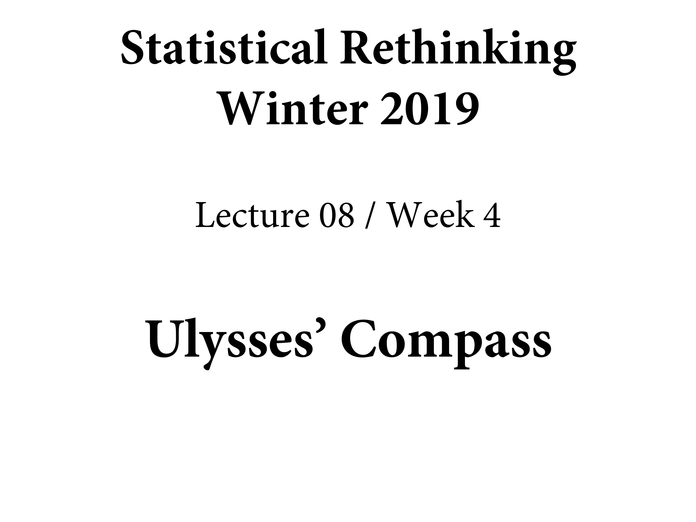

7.2 Entropy and accuracy

Multiple strategies. In Bayesian statistics, we regularise. Can be even omre aggressive. In non-Bayesian, it’s mathematically identical to using a prior. Why do machine leanring people regularise? Because it makes better predictions.

We want to get to CV and WAIC, which replaced AIC. The jounrey to these appraoches requires some setups. First thing to answer is how to measure accuracy. Many bad ways to measure it. There’s an actual gold standard. And once we’ve got it, we want to measure distance from the target. How do we decide how close the models are getting to it? Then we learn how to develop these instruments.
7.2.1. Firing the weatherperson
In defining a target, there are two major dimensions to worry about:
- Cost-benefit analysis. How much does it cost when we’re wrong? How much do we win when we’re right? Most scientists never ask these questions in any formal way, but applied scientists must routinely answer them.
- Accuracy in context. Some prediction tasks are inherently easier than others. So even if we ignore costs and benefits, we still need a way to judge “accuracy” that accounts for how much a model could possibly improve prediction.

slides_dir = here::here("docs/slides/L08")
![We need to appeal to information theory because machine prediction works by following the laws of information theory. We'll drive the single gold-standard way to score a model's accuracy. Here's the basic problem information theory sets out to address. When we have some unknown event, there is uncertainty. When we know more, we become less uncertain. IC is a principle for saying when something is more uncertain than something else. There's uncertainty about the weather tomorrow. We may use cues from today to predict tomorrow.](slides/L08/02.png)
We need to appeal to information theory because machine prediction works by following the laws of information theory. We’ll drive the single gold-standard way to score a model’s accuracy. Here’s the basic problem information theory sets out to address. When we have some unknown event, there is uncertainty. When we know more, we become less uncertain. IC is a principle for saying when something is more uncertain than something else. There’s uncertainty about the weather tomorrow. We may use cues from today to predict tomorrow.

Presume you know that LA has no weather. Always sunny. 15-20 degrees. Little uncertainty. If it does rain, you’ll be shocked. Contrast this with Glasgow, where it rains a lot. More rain than not. NY has highly-variable weather. There’s great uncertainty about what the weather would be like, unlike the other two. This uncertainty arises from the frequency distributions of these microclimates.
7.2.2. Information and uncertainty
The basic insight is to ask: How much is our uncertainty reduced by learning an outcome?
Information: The reduction in uncertainty when we learn an outcome.
There are many possible ways to measure uncertainty. The most common way begins by naming some properties a measure of uncertainty should possess. These are the three intuitive desiderata:
The measure of uncertainty should be continuous.
The measure of uncertainty should increase as the number of possible events increases.
The measure of uncertainty should be additive.
There is only one function that satisfies these desiderata. This function is usually known as INFORMATION ENTROPY, and has a surprisingly simple definition.
Uncertainty \(H\) of \(p\), which is a vector of probability, is just the average log-probability of the event. This is a unique criterion. If you want a reasonable measure of surprise, you have to adopt something that is this or something proportional to this. Your mobile phones (3G and above) work because of this.
7.2.3. From entropy to accuracy
How can we use information entropy to say how far a model is from the target?
Divergence: The additional uncertainty induced by using probabilities from one distribution to describe another distribution.
![What's the **potential for surprise**?. We are interested in this. Want to calculate the entropy of our model, and then there's the entropy of the true distribution, of nature. And we want to minimise the difference between them. This is called the $D_{KL}$ divergence. Two probabilities $p$ and $q$. $p$ is nature, say the frequencies of weather events, and $q$ is our forecast. If we want to score $q$, we look at the divergence. K is for Kulbak. The distance from $p$ to $q$ is the sum (averaging) between $p$ and $q$. It's a distance, but it's not symmetric.](slides/L08/05.png)
What’s the potential for surprise?. We are interested in this. Want to calculate the entropy of our model, and then there’s the entropy of the true distribution, of nature. And we want to minimise the difference between them. This is called the \(D_{KL}\) divergence. Two probabilities \(p\) and \(q\). \(p\) is nature, say the frequencies of weather events, and \(q\) is our forecast. If we want to score \(q\), we look at the divergence. K is for Kulbak. The distance from \(p\) to \(q\) is the sum (averaging) between \(p\) and \(q\). It’s a distance, but it’s not symmetric.
Easy to code. Take the vector p. Sum p time the difference between log(p) and log(q). It’s only 0 where q = p.
t <-
tibble(p_1 = .3,
p_2 = .7,
q_1 = seq(from = .01, to = .99, by = .01)) %>%
mutate(q_2 = 1 - q_1) %>%
mutate(d_kl = (p_1 * log(p_1 / q_1)) + (p_2 * log(p_2 / q_2)))
head(t)## # A tibble: 6 × 5
## p_1 p_2 q_1 q_2 d_kl
## <dbl> <dbl> <dbl> <dbl> <dbl>
## 1 0.3 0.7 0.01 0.99 0.778
## 2 0.3 0.7 0.02 0.98 0.577
## 3 0.3 0.7 0.03 0.97 0.462
## 4 0.3 0.7 0.04 0.96 0.383
## 5 0.3 0.7 0.05 0.95 0.324
## 6 0.3 0.7 0.06 0.94 0.276t %>%
ggplot(aes(x = q_1, y = d_kl)) +
geom_vline(xintercept = .3, color = carto_pal(7, "BurgYl")[5], linetype = 2) +
geom_line(color = carto_pal(7, "BurgYl")[7], size = 1.5) +
annotate(geom = "text", x = .4, y = 1.5, label = "q = p",
color = carto_pal(7, "BurgYl")[5], family = "Courier", size = 3.5) +
labs(x = "q[1]",
y = "Divergence of q from p")Figure 7.6
Suppose instead we live in Abu Dhabi. Then the probabilities of rain and shine might be more like $p_1 = 0.01 $ and \(p_2 = 0.99\). Now the entropy would be approximately 0.06. Why has the uncertainty decreased? Because in Abu Dhabi it hardly ever rains. Therefore there’s much less uncertainty about any given day, compared to a place in which it rains 30% of the time. It’s in this way that information entropy measures the uncertainty inherent in a distribution of events. Similarly, if we add another kind of event to the distribution—forecasting into winter, so also predicting snow—entropy tends to increase, due to the added dimensionality of the prediction problem.

Here’s a cartoon version. You’re heading to Mars, or a Mars-like planet, but you don’t know much about it. You can’t control your rocket and you want to predict whether you’ll land on water or land. You’ll use Earth as your only model. Earth is a high-entropy planet because it has a lot of water and land. So you won’t be surprised whether you get land or water.
![But say you're going in the other direction. Your potential for surprise is now very high. When you get to Earth and discover all this blue liquid, you'll be surprised. Mars is the LA of planets. And as a consequence, the information distance from Earth to Mars is smaller than the information distance from Mars to Earth. Because if your model is the Earth, it expects all sorts of events, which means that it's less surprised, which means that its prediction error is lower, on average, across a huge number of potential planets across the universe, than if you came from Mars, where you'll be surprised by water all the time. **This is why simpler models work better - because they have higher entropy.** The distance between a simpler model and other things are on average lower, because it expects many things. Gneeralized linear models have higher entropy. All machine learning works this way.](slides/L08/08.png)
But say you’re going in the other direction. Your potential for surprise is now very high. When you get to Earth and discover all this blue liquid, you’ll be surprised. Mars is the LA of planets. And as a consequence, the information distance from Earth to Mars is smaller than the information distance from Mars to Earth. Because if your model is the Earth, it expects all sorts of events, which means that it’s less surprised, which means that its prediction error is lower, on average, across a huge number of potential planets across the universe, than if you came from Mars, where you’ll be surprised by water all the time. This is why simpler models work better - because they have higher entropy. The distance between a simpler model and other things are on average lower, because it expects many things. Gneeralized linear models have higher entropy. All machine learning works this way.
7.2.4. Estimating divergence
![How to estimate this in practice: we want the gold standard way to score, but the problem is we can't score the truth. Turns out we don't need the truth part because it's just an additive term, so you can get the relative scores of the models without knowning the truth. THe log score is the gold standard, whether you're Bayesian or not. In practice, there's not a single log score, but a distribution of log scores. So we want the average log score, which unfortunately is called the *log-pointwise-predictive-density*. For each point `i`, we're taking the average probability of that observation conditional on the samples, and we average over the samples, and find the average probabiltiy that the model expects, then we take the log and sum across all observations in the model.](slides/L08/09.png)
How to estimate this in practice: we want the gold standard way to score, but the problem is we can’t score the truth. Turns out we don’t need the truth part because it’s just an additive term, so you can get the relative scores of the models without knowning the truth. THe log score is the gold standard, whether you’re Bayesian or not. In practice, there’s not a single log score, but a distribution of log scores. So we want the average log score, which unfortunately is called the log-pointwise-predictive-density. For each point i, we’re taking the average probability of that observation conditional on the samples, and we average over the samples, and find the average probabiltiy that the model expects, then we take the log and sum across all observations in the model.
This kind of score is a log-probability score, and it is the gold standard way to compare the predictive accuracy of different models. It is an estimate of \(E\ log(q_i)\), just without the final step of dividing by the number of observations.
Compute lppd for the first model we fit in this chapter:
log_lik(b7.1) %>%
data.frame() %>%
purrr::set_names(pull(d, species)) %>%
pivot_longer(everything(),
names_to = "species",
values_to = "logprob") %>%
mutate(prob = exp(logprob)) %>%
group_by(species) %>%
summarise(log_probability_score = mean(prob) %>% log())## # A tibble: 7 × 2
## species log_probability_score
## <chr> <dbl>
## 1 afarensis 0.384
## 2 africanus 0.411
## 3 boisei 0.400
## 4 ergaster 0.231
## 5 habilis 0.336
## 6 rudolfensis 0.274
## 7 sapiens -0.607If you sum these values, you’ll have the total log-probability score for the model and data” (p. 210).
Here we sum those \(log(q_i)\) values up to compute \(S(q)\).
log_lik(b7.1) %>%
data.frame() %>%
set_names(pull(d, species)) %>%
pivot_longer(everything(),
names_to = "species",
values_to = "logprob") %>%
mutate(prob = exp(logprob)) %>%
group_by(species) %>%
summarise(log_probability_score = mean(prob) %>% log()) %>%
summarise(total_log_probability_score = sum(log_probability_score))## # A tibble: 1 × 1
## total_log_probability_score
## <dbl>
## 1 1.43Larger values are better, because that indicates larger average accuracy.
log_prob <- brms::log_lik(b7.1)
log_prob %>%
glimpse()## num [1:4000, 1:7] 0.769 0.396 0.894 0.558 -0.235 ...
## - attr(*, "dimnames")=List of 2
## ..$ : NULL
## ..$ : NULLprob <-
log_prob %>%
# make it a data frame
data.frame() %>%
# add case names, for convenience
set_names(pull(d, species)) %>%
# add an s iteration index, for convenience
mutate(s = 1:n()) %>%
# make it long
pivot_longer(-s,
names_to = "species",
values_to = "logprob") %>%
# compute the probability scores
mutate(prob = exp(logprob))
prob## # A tibble: 28,000 × 4
## s species logprob prob
## <int> <chr> <dbl> <dbl>
## 1 1 afarensis 0.769 2.16
## 2 1 africanus 0.837 2.31
## 3 1 habilis 0.647 1.91
## 4 1 boisei 0.690 1.99
## 5 1 rudolfensis 0.140 1.15
## 6 1 ergaster -0.0126 0.987
## 7 1 sapiens -0.497 0.608
## 8 2 afarensis 0.396 1.49
## 9 2 africanus 0.479 1.61
## 10 2 habilis 0.768 2.16
## # … with 27,990 more rows# Now for each case, take the aerage of each of the probability scores, then take the log of that
prob <-
prob %>%
group_by(species) %>%
summarise(log_probability_score = mean(prob) %>% log())
prob## # A tibble: 7 × 2
## species log_probability_score
## <chr> <dbl>
## 1 afarensis 0.384
## 2 africanus 0.411
## 3 boisei 0.400
## 4 ergaster 0.231
## 5 habilis 0.336
## 6 rudolfensis 0.274
## 7 sapiens -0.607# Then sum up the values
prob %>%
summarise(total_log_probability_score = sum(log_probability_score))## # A tibble: 1 × 1
## total_log_probability_score
## <dbl>
## 1 1.43
Why does this all matter in a practical sense? We can measure overfitting. Look at the difference between in- and out-of-sample. Smaller is better. The more negative it is, the better it is. Two samples from the same generative process. Training and testing set. Fit our model to the training sample, and get the deviance of train. Then we force it to predict the out-of-sample. The difference between them are our measure of overfitting.

We’ll generate some samples based on a known “truth”. The first is our intercept model.
7.2.5. Scoring the right data
Create custome function:
my_lppd <- function(brms_fit) {
log_lik(brms_fit) %>%
data.frame() %>%
pivot_longer(everything(),
values_to = "logprob") %>%
mutate(prob = exp(logprob)) %>%
group_by(name) %>%
summarise(log_probability_score = mean(prob) %>% log()) %>%
summarise(total_log_probability_score = sum(log_probability_score))
}Let’s compute the log-score for each of the models from earlier in this chapter:
tibble(name = stringr::str_c("b7.", 1:6)) %>%
mutate(brms_fit = purrr::map(name, get)) %>%
mutate(lppd = purrr::map(brms_fit, ~my_lppd(.))) %>%
unnest(lppd)## # A tibble: 6 × 3
## name brms_fit total_log_probability_score
## <chr> <list> <dbl>
## 1 b7.1 <brmsfit> 1.43
## 2 b7.2 <brmsfit> 0.686
## 3 b7.3 <brmsfit> 0.168
## 4 b7.4 <brmsfit> 0.912
## 5 b7.5 <brmsfit> 0.102
## 6 b7.6 <brmsfit> 25.9The more complex models have larger scores, but it is really the score on new data that interests us.

This is what happens in-sample. Lower deviance is better. The point is the average across all simulations, with one standard deviation on either side. Note the more complicated models do better. They’re always going to fit in-sample better. Note there’s a big jump at 3, then very little after 3.

Here’s out-of-sample. Unsurprisingly, everything does worse out-of-sample. There’s a pattern to the amount of overfitting. You can see that model 3 is best on average. Models 4 and 5 get progressively worse, because they’re fitting noise.

In anthropology we’re happy with 20. But with N = 100, you can more precisely estimate when a data point doesn’t matter. So 4 and 5 are only slightly worse. Because you can get a really good posterior distribution. But they pattern is the same. There’s a very special pattern in the distances between these points. On the left, you can see the distances are growing, and approximately twice the number of parameters in each case. Hold that in your mind.
# I've reduced this number by one order of magnitude to reduce computation time
n_sim <- 1e3
n_cores <- 8
kseq <- 1:5
# define the simulation function
my_sim <- function(k) {
print(k);
r <- mcreplicate(n_sim, sim_train_test(N = n, k = k), mc.cores = n_cores);
c(mean(r[1, ]), mean(r[2, ]), sd(r[1, ]), sd(r[2, ]))
}
# here's our dev object based on `N <- 20`
n <- 20
dev_20 <-
sapply(kseq, my_sim)
# here's our dev object based on N <- 100
n <- 100
dev_100 <-
sapply(kseq, my_sim)
# bind together in a tibble to plot
dev_tibble <-
rbind(dev_20, dev_100) %>%
data.frame() %>%
mutate(statistic = rep(c("mean", "sd"), each = 2) %>% rep(., times = 2),
sample = rep(c("in", "out"), times = 2) %>% rep(., times = 2),
n = rep(c("n = 20", "n = 100"), each = 4)) %>%
pivot_longer(-(statistic:n)) %>%
pivot_wider(names_from = statistic, values_from = value) %>%
mutate(n = factor(n, levels = c("n = 20", "n = 100")),
n_par = str_extract(name, "\\d+") %>% as.double()) %>%
mutate(n_par = ifelse(sample == "in", n_par - .075, n_par + .075))head(dev_tibble)## # A tibble: 6 × 6
## sample n name mean sd n_par
## <chr> <fct> <chr> <dbl> <dbl> <dbl>
## 1 in n = 20 X1 55.9 6.02 0.925
## 2 in n = 20 X2 54.9 5.46 1.92
## 3 in n = 20 X3 51.8 4.30 2.92
## 4 in n = 20 X4 51.6 3.96 3.92
## 5 in n = 20 X5 51.3 3.75 4.92
## 6 out n = 20 X1 57.7 6.59 1.08# for the annotation
text <-
dev_tibble %>%
filter(n_par > 1.5,
n_par < 2.5) %>%
mutate(n_par = ifelse(sample == "in", n_par - 0.2, n_par + 0.29))
# plot!
dev_tibble %>%
ggplot(aes(x = n_par, y = mean,
ymin = mean - sd, ymax = mean + sd,
group = sample, color = sample, fill = sample)) +
geom_pointrange(shape = 21) +
geom_text(data = text,
aes(label = sample)) +
scale_fill_manual(values = carto_pal(7, "BurgYl")[c(5, 7)]) +
scale_color_manual(values = carto_pal(7, "BurgYl")[c(7, 5)]) +
labs(title = "Figure 7.6. Deviance in and out of sample.",
x = "number of parameters",
y = "deviance") +
theme(legend.position = "none",
strip.background = element_rect(fill = alpha(carto_pal(7, "BurgYl")[1], 1/4), color = "transparent")) +
facet_wrap(~ n, scale = "free_y")
Figure 7.6